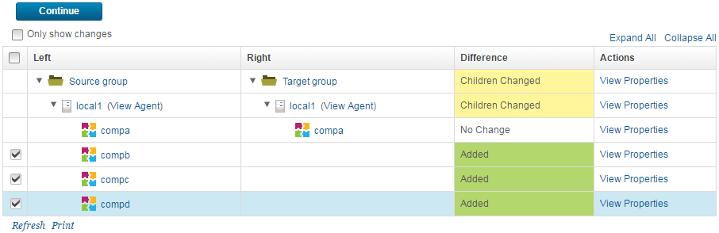
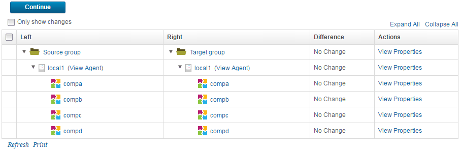

Comparing and synchronizing resources
You can compare the contents of a resource group to another group or a resource template and then apply changes to the group or template.
You can compare a group in the resource tree to another group or a resource template. You can apply changes, including properties and their values, from the first group that you select to the resource tree or second group.
- Open the Resource Tree page. In addition to the Resource Tree page, resources can be displayed in several ways, such as by adding resources to an environment.
- Display the Action menu for the folder that contains the source group and click Compare or Synchronize.
- Compare the contents of a resource to either a resource template or another resource.
- To compare the contents of the resource to the contents of a resource template, take the following actions:
- From the Compare Resources window, select Compare With Resource Template.
- From the Resource Template list, select the name of the target resource template.
- Click Save.
- To compare the contents of the resource to the contents of another resource, take the following actions:
- From the Compare Resources window, select Compare With Resource.
- From the Compare Resources list, click Set.
- From the Select Resource window, select the target resource. You can expand resources and select a nested resource for the comparison.
- Click OK.
- Click Save.
- To compare the contents of the resource to the contents of a resource template, take the following actions:
- On the Resource Comparison page, expand both resource trees.
- Clear Only show changes.
-
Select each different resource from the left-hand, or source, resource to apply to the right-hand, or target, resource. The differences between the two resource trees are displayed. Each line of the resource tree can be one of the following states: Children Changed, Added, Deleted, or No Change. For example, the following image shows that the source resource tree contains three more agents than the target resource tree. All three additional agents will be added to the right-hand, or target, resource tree.

-
To review your changes, click Continue. The changes to the right-hand resource tree are displayed in the Preview Changes window.
- Click Apply Changes. An Alert window confirms that the resource changes were applied successfully.
-
Click Close. The Resource Comparison page displays the updated status of the right-hand resource tree, as shown in the following image.

Since the contents of the groups are now identical, the statuses in the Difference column are all No Change.
Parent topic: Modifying the resource tree